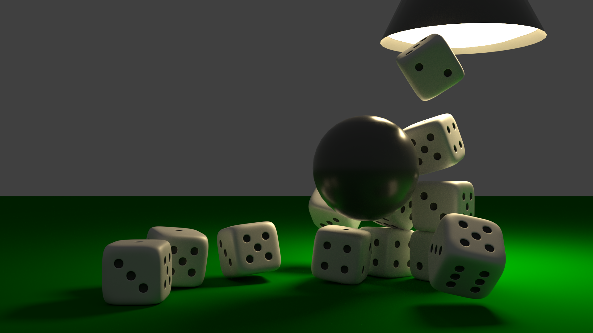
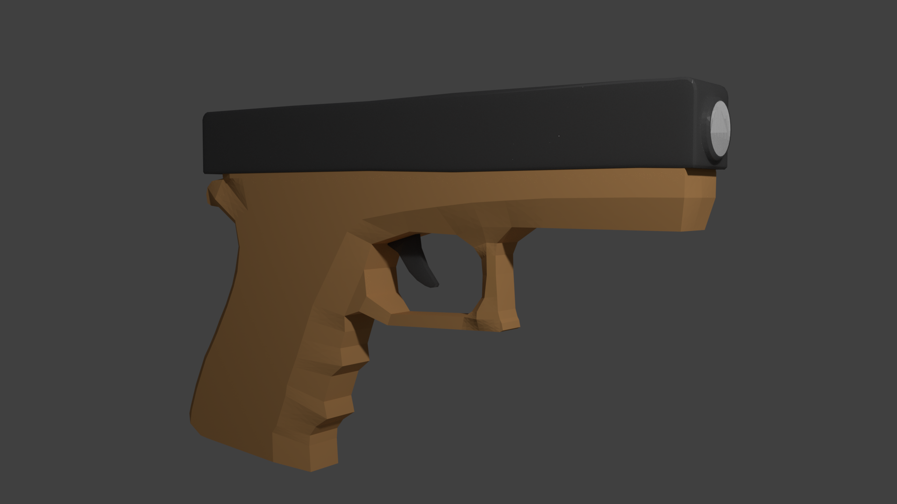
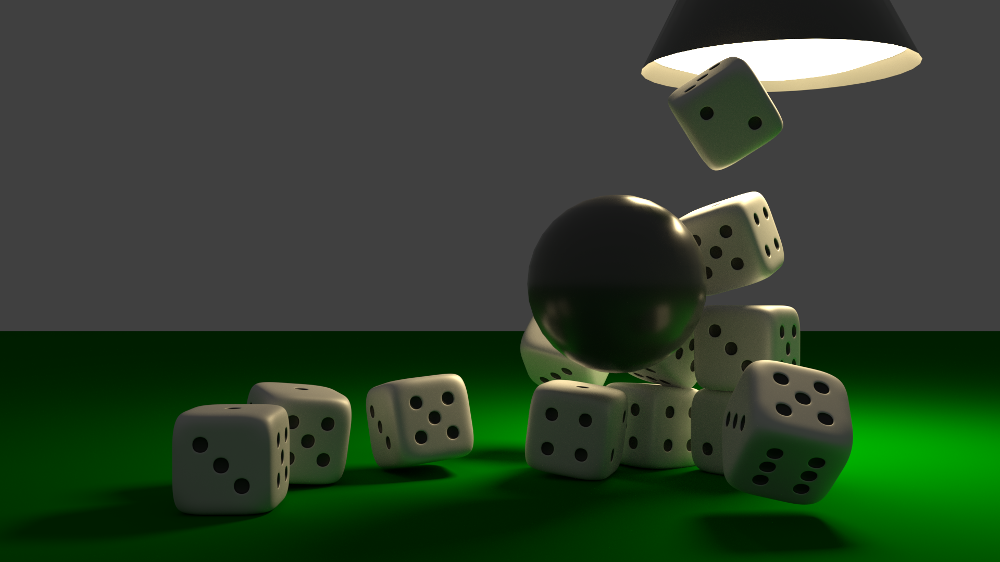
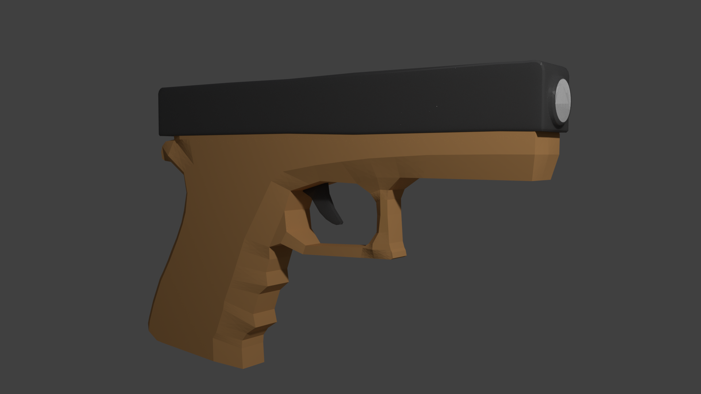

Term 2
3D Modelling - Negotiated Project 2
Overview
This was our second negotiated project for the year and I chose to do 3D modelling using blender.
Objectives
My first objective was to make a 3D gun with materials. The handle and body of the gun would be a lightish brown and the trigger and loading thing would be a slivery metallic material. I also wanted to make a dice, something that I thought would be pretty hard but was kind of easy.
Method - Gun
I started out by finding an image of the gun I would model, moved it in to blender then started modelling using e to make new segments of the model and g to move selected parts of the model. After I had the basic shape of the gun I made the trigger and the loading thing with a small barrel on the end. I then smoothed off some parts and shaped the handle a bit more. Then I started to make materials I would assign to parts of the model, the body of the gun was light brown and the trigger and loading part were grey and metallic.
Method – Dice
I followed some tutorials made by youtubers and made some modifications to it. I changed the shape of the dice to make it more round and made the divots a bit deeper. I started with a cube and in edit mode I subdivided it and changed the amount of cuts to 4. This gave me a 5x5 area to work with on each side. I selected the faces where the dots would be, opposite sides adding up to seven. After that I pressed e and then s to make the divots a bit smaller and so they wouldn’t be combined. Then I made the divots in the dice and assigned textures to the dots and the shell of the dice. Then I duplicated it made a basic ceiling lamp and added a ball with physics to make the dice fly everywhere.
Results/Problems and Solutions
The first problem I had was trying to make the gun look smoother and better looking, but it didn’t end up working.
The second problem I encountered was the surface the dice were on, I wanted it to look like a cloth material but I couldn’t end up doing it.
I think that the dice ended up looking pretty good but the gun wasn’t that great.
Images
(Click on them to make the image larger)
 
